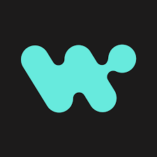

Reliability
Idempotent writes, structured retries, and error handling that survives the worst day.
Enterprise Integration Engineer
Enterprise integrations on MuleSoft and Workato — production APIs, B2B/EDI, and automation for regulated industries and global logistics. I optimize for clarity under load, not slide-deck polish.
I build systems that don’t break in production.
MuleSoft · Salesforce · Workato — official marks you supplied, cropped for the row, with brand-tinted glow. Scroll tilts the row.

01 About
I build integration systems that stay calm when traffic spikes, partners change formats, and someone asks “what happened to that message?” long after stand-up ended.
Hyderabad · MuleSoft & Workato · 3+ years shipping production integrations
I care about the boring parts that keep teams out of crisis mode: contracts the next engineer can reason about, queues that don’t swallow failures, and logs you can trace without guesswork. Most of my work sits between “the business needs this data” and “the platform cannot go dark.”
Today I’m with Prowess, on large-scale partner messaging for global shipping. Before that, years at k-logix meant owning client-facing delivery across banking, commerce, and healthcare — migrations, APIs, and automation where a defect has a dollar sign or a human name attached to it.
For dates, titles, and stack-level detail, see Career and Case studies below — this section is the why, not the inventory.
When I take on a system, I take on the responsibility for it — not just the next ticket.
Idempotent writes, structured retries, and error handling that survives the worst day.
APIs and recipes that scale with traffic — not with cost or engineering toil.
RAML contracts as the source of truth — versioned, documented, consumer-aligned.
Partner file and message pipelines: SFTP intake, IBM MQ async paths, EDIFACT-style validation, outbound send, and reconciliation at bulk scale.
02 Expertise
03 Career
June 2025 — Present
Dec 2022 — May 2025
2018 — 2022 · Dean's List · GPA 6.53/10
04 Case studies
Each write-up is short on fluff: problem, approach, outcome. Expand any card for detail.
Global shipping partner messaging at scale: inbound files and industry B2B messages from SFTP through IBM MQ–backed async processing, DataWeave map and validation, to outbound send and downstream handoff — API-led, production-disciplined.
Multiple trading partners, bulk file volumes, and strict B2B semantics — without losing messages, without blind spots in reconciliation, and without performance surprises when queues and workers are under load.
Contributed to API-led Mule 4.6.x services across inbound ingestion, transformation/map, and outbound send: SFTP sources, IBM MQ for scalable async processing, DataWeave for partner-specific formats and validation (including control-number / code-list handling), HTTP/REST system APIs (including JDBC to Oracle), structured error paths, and SIT validation with scenario-based payloads.
A U.S. community bank running mission-critical APIs on aging CloudHub 1.0. I owned the migration, the contracts, and the production handoff — end to end.
The bank's MuleSoft estate was on CloudHub 1.0 with inconsistent error handling, tight coupling, and limited observability. Deprecation was on the roadmap; downtime was not an option.
Owned the CloudHub 2.0 migration end-to-end — re-architected flows around Anypoint MQ, redesigned RAML contracts with explicit versioning, built MUnit coverage, and rolled out via phased deployment with rollback gates.
Manual reconciliation between Acumatica, Shopify, and Salesforce was slowing fulfillment and creating data drift. I designed the automation that fixed it.
Order, customer, and inventory data lived in three systems that didn't talk. Ops spent hours daily reconciling Shopify orders against Acumatica fulfillment and Salesforce account state — and still missed things.
Designed event-driven Workato recipes with webhook ingestion from Shopify, structured payload mapping to Acumatica, and Salesforce sync flows with audit logging and clean error handling.
A home-care provider with client and sales data fragmented across Salesforce, AxisCare, and Snowflake. I built the automation that made all three trustworthy.
Client records were duplicated across systems, sales opportunities went stale, and downstream reporting in Snowflake couldn't be trusted — making it hard to act on pipeline data.
Built a Workato automation layer with query-list driven deduplication, real-time webhook updates between Salesforce and AxisCare, and an audit trail that traced every record change back to source.
05 Playground
Payloads fall in three lanes. When a dot crosses the purple glow band, tap Left / Center / Right for that lane — or keys 1 2 3. Route before it hits the bottom. Three misses and the backlog wins.
06 Contact
Have an integration that needs to scale — or one that’s breaking in production? Let’s talk.